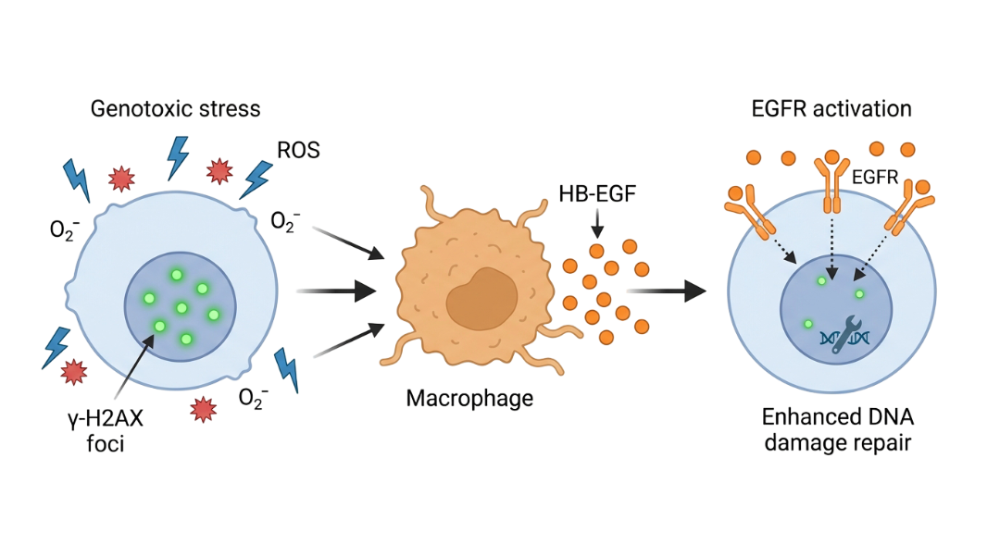
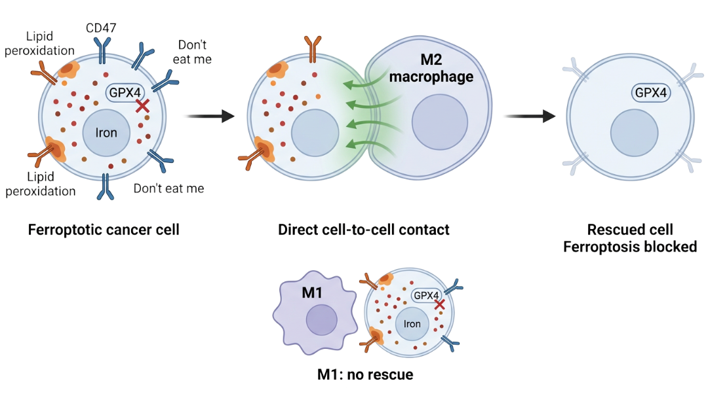
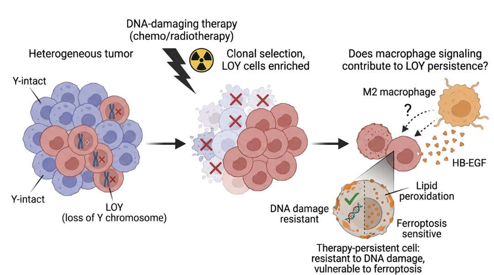

The Hebrew University of Jerusalem · Hadassah Medical Center
Immunity as Quality Control
We study how macrophages sense cellular conditions and maintain tissue homeostasis and how cancer hijacks this system to resist therapy.
Our work revealed that macrophages do more than fight infection. They function as a quality control system for tissues by sensing cellular stress and releasing signals that promote DNA repair and recovery. This mechanism, which we termed macrophage-assisted DNA repair, shows how immune cells actively support tissue resilience after genotoxic damage.
Our current research investigates how tumors exploit these protective pathways. We study how macrophage signaling shapes therapy resistance, how ferroptotic cell death interacts with immune surveillance, and how these processes influence cancer evolution.
The Rachmilewitz Lab, led by Prof. Jacob Rachmilewitz since 2000, is based at the Gene Therapy Institute at Hadassah Medical Center, Faculty of Medicine, Hebrew University of Jerusalem.
1. DNA Repair & Cancer Resistance
Macrophages release HB-EGF to help damaged cells repair DNA breaks.
We study how this repair support creates epigenetic memory in lung cancer cells.
This mechanism may help explain why tumors become resistant to therapy.
2. Macrophages & Ferroptosis
Macrophages can rescue stressed cells from ferroptotic death through direct contact.
We investigate how immune cells interfere with ferroptosis in tumor environments.
Understanding this interaction may reveal why ferroptosis-based therapies sometimes fail.
3. Loss of Y Chromosome in Lung Cancer
Loss of the Y chromosome is enriched in aggressive lung tumors and alters chromatin regulation.
We study how LOY affects DNA damage repair, ferroptosis sensitivity, and the emergence of therapy-persistent cells.
This may explain why male lung cancer patients often have poorer treatment outcomes.
Latest Publication · December 2025
Macrophages rescue cells from ferroptotic death
Hefetz R, Lianski S, Ghantous L, Volman Y, Sadovsky Y, Beharier O & Rachmilewitz J
Can we erase the epigenetic memory that makes cancer cells resistant?
02
How do macrophages decide whether to rescue or ignore ferroptotic cells?
03
Does Y chromosome loss drive therapy resistance in male cancer patients?
Research Program
Immunity as Quality Control
Across all our work, a unifying idea emerges: macrophages act as a quality control system for tissues. They sense the condition of surrounding cells, whether healthy, stressed, damaged, or dying, and respond with signals aimed at restoring homeostasis. Our research traces how this quality control role operates at the molecular level, and what happens when cancer co-opts it.
1. Macrophage-Assisted DNA Repair & Cancer Resistance
The discovery
We showed that macrophages detect oxidative stress in neighboring cells and release HB-EGF, which activates EGFR signaling and accelerates the resolution of DNA double-strand breaks. We call this "macrophage-assisted DNA repair", a mechanism where immune cells actively help tissues recover from genotoxic damage.

Figure 1. Macrophages detect oxidative stress and release HB-EGF, which activates EGFR signaling to accelerate DNA double-strand break resolution.
From protection to resistance
Our data shows that lung cancer cells treated with HB-EGF during genotoxic stress become better at repairing DNA when faced with subsequent damage. They proliferate faster and form more colonies, even weeks after the initial HB-EGF exposure. This suggests an "epigenetic memory" that primes cancer cells for resistance.
Current work with DKFZ
In collaboration with Christoph Plass and Maria Llamazares Prada at the German Cancer Research Center, we are profiling the transcriptomic and epigenomic landscapes of these persister cells. Using RNA-seq, ATAC-seq, and single-cell approaches, we aim to identify the epigenetic modifications that underlie this acquired resistance and ultimately find ways to reverse it.
DDR and immune evasion
We also discovered that the DNA damage response regulates expression of CD47, the "don't eat me" signal on cell surfaces. This links DNA repair directly to immune checkpoint biology and suggests that damaged cells actively modulate their visibility to the immune system.
Key Publications
2. Macrophages & Ferroptosis
A new form of immune protection
Ferroptosis, iron-dependent cell death driven by lipid peroxidation, has emerged as a promising way to kill therapy-resistant cancer cells. We found something unexpected: macrophages can rescue cells from ferroptosis.

Figure 2. Macrophages co-cultured with cancer cells block ferroptosis through direct cell-to-cell contact.
What we showed
Macrophages co-cultured with cancer cells block ferroptosis induced by GPX4 inhibitors or system Xc⁻ inhibition. This rescue requires direct cell-to-cell contact and depends on macrophage polarization: M1 macrophages lose this ability, while M2 macrophages retain it. Ferroptotic cells keep high levels of CD47 and do not expose phosphatidylserine, meaning the immune system receives a "don't eat me" signal instead of an "eat me" signal, creating a window for rescue.
Cancer and placenta
In cancer, macrophages may provide an escape route from ferroptosis-based therapies. In pregnancy, macrophages protect trophoblasts from ferroptotic death in placental tissue, with relevance to preeclampsia.
Key Publications
Hefetz et al., Cell Death & Disease 2025
3. Loss of Y Chromosome in Lung Cancer
Therapy persistence and clonal selection
When tumors are treated with DNA-damaging therapies, most cells die, but a small subset persists and drives relapse. Tumors are heterogeneous, and therapy can enrich rare clones with intrinsic survival advantages. One such clonal feature is loss of the Y chromosome, a frequent somatic event in aging males that is enriched in aggressive lung adenocarcinoma and associated with poorer outcomes.

Figure 3. Loss of the Y chromosome (LOY) alters the tumor epigenome, driving the emergence of therapy-persistent clones while potentially creating new metabolic vulnerabilities.
From resistance to vulnerability
Although therapy-persistent cells resist DNA damage, this does not mean they resist all forms of stress. Persistence is accompanied by metabolic remodeling, including altered redox balance and iron handling, which can increase sensitivity to ferroptosis. Resistance to DNA damage and sensitivity to ferroptosis can therefore coexist within the same cell population.
Macrophages and the microenvironment
DNA-damaging therapy also reprograms macrophages in the tumor microenvironment. This connects the LOY project to our core work on macrophage-assisted DNA repair and anti-ferroptotic activity, asking whether macrophage signaling contributes to the emergence of therapy-persistent LOY cells in lung adenocarcinoma.
Key Publications
Origins: Immune Tolerance
Our earliest work focused on immune tolerance during pregnancy. We showed that antigen-presenting cells can be tolerized through direct cell-cell interaction, suppressing T cell activation. This shaped our thinking about macrophages as environmental sensors and led to everything that followed.
Based at the Gene Therapy Institute, Hadassah Medical Center, Faculty of Medicine, Hebrew University of Jerusalem.
JR
Dr. Jacob Rachmilewitz
Principal Investigator
Principal investigator at the Gene Therapy Institute since 2000 and lecturer at the Hebrew University School of Medicine. His lab pioneered the concept of "macrophage-assisted DNA repair" and investigates how immune signaling shapes therapy resistance in cancer.